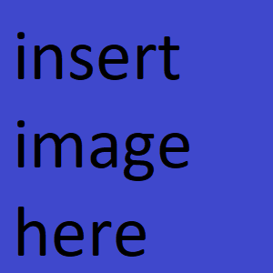

Learn On: Build Forward: STEM is Science, Technonlogy, Engineering and Mathematics. Every day in class the goal is to learn on and build our knowledge. Below you can click on a particular Class syllabi, grade level learning and builds, what students are doing in class, and how to stay in touch. Eather way, learning is the goal Building is a vehicle.
About Tener That's me! Mr. Tener. I am excited about teaching and specifically about teaching this year for a number of reasons. First, new students come in with a passion to learn in an interactive environment. It is great to see the interest with which students latch onto a piece of information and design something around it. This gives me a new perspective on solving problems. I also can’t wait for returning students who want to further their knowledge or learn about and engineer a new solution in STEM. In short, I am excited about the students, and what they will learn!
6th Grade Syllabus
Quick Synopsis of 6th Grade STEM:
We will complete four main projects including Researched Slideshows, Flashlight Construction, Block Coding, and Bridge Engineering
We (the students of this class) want to see and use connections between Science, Technology,
Engineering and Mathematics
7th Grade syllabus
Quick Synopsis of 7th Grade STEM:
We will learn through Construction of a host of projects and adherence to the Engineering method. If the engineering method is followed well we will end up making projects of our own design.
We (the students of this class) want to see and use connections between Science, Technology and all other areas of study!
8th Grade Syllabus
Quick Synopsis of 8th Grade STEM:
We will learn through applying Science and Technology principles to the Engineering of Various Projects. We will start with basic measurements and move to the parts of a computer.
We (the students of this class) want to see and use connections between Science, Technology, Engineering, Math and all other areas of study!
search bar
Title of Project click to see 20 words here describing the project. 20 words here describing the project.20 words here describing the project.
Title of Project click to see 20 words here describing the project. 20 words here describing the project.20 words here describing the project.
Title of Project click to see 20 words here describing the project. 20 words here describing the project.20 words here describing the project.